Ducks and Geese
Ducks and Geese
They live between the bank and the water, floating at the waterline and dabbling. A drake and a duck, or a gander and a goose, pair up on seeds.
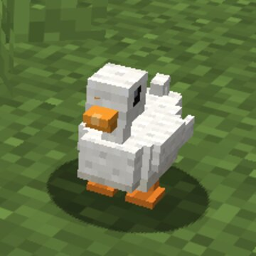
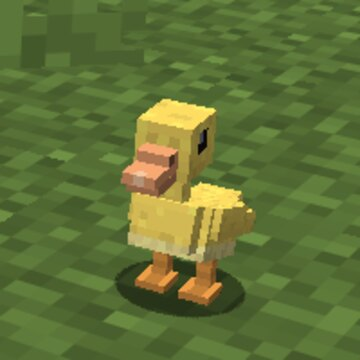
Eggs and the Table
Ducks lay all year, Runners and Campbells most. Geese lay big eggs, in spring only; the Chinese most. A thrown duck or goose egg may hatch.
Both birds give feathers, and roast well.
Pekin
Table bird, lays well
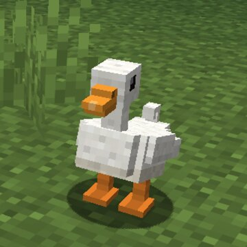
The big white farm duck: quick to grow for the table, and a good layer too.
Indian Runner
Best layer
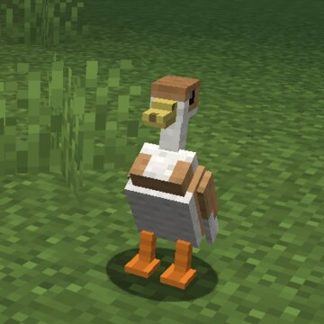
Stands bolt upright like a bottle and runs rather than waddles. The best layer of all.
Khaki Campbell
Prolific layer
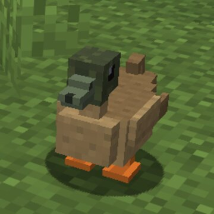
A plain khaki duck and a bronze-headed drake: a prolific layer.
Rouen
Table bird
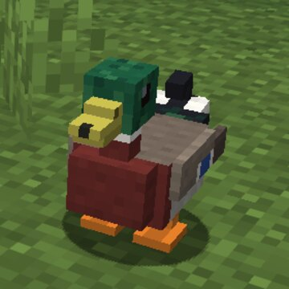
Mallard colours on a heavy body. A slow layer, but a fine bird for the table.
Muscovy
Table bird, quiet
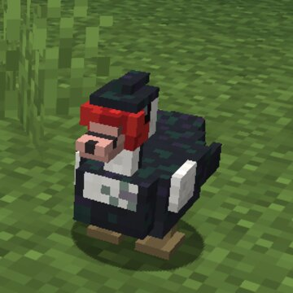
Big and quiet, with red caruncles about the face; the drake wears a little crest.
Call
Ornamental (and loud)
A tiny duck with a short bill and a very big voice. White or mallard-coloured.
Crested
Ornamental
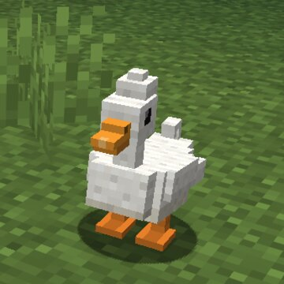
A white duck with a pom-pom crest, kept for the fun of it.
Guard Geese
Walk up openly and a goose hisses, neck low; linger and a gander charges and nips. Creep up crouching, or carry seeds, to pass. A monster near the flock sets them honking.
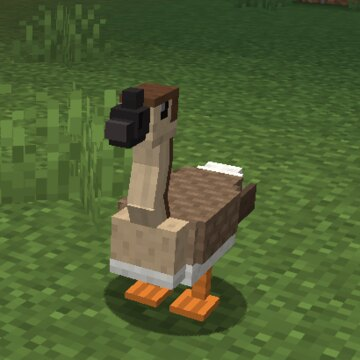
Embden
Table bird
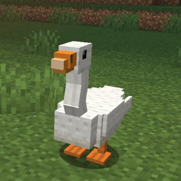
The tall white goose of the farmyard: heavy, quick to grow, a fine table bird.
Toulouse
Table bird
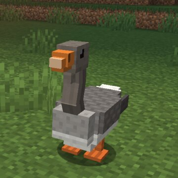
Grey, broad and heavy, with a deep keel and a dewlap under the bill.
Chinese
Watch goose, best layer
Slim and upright with a knob on its bill: a loud watch goose and the best layer. Grey-brown or white.
Pilgrim
Ganders white, geese grey
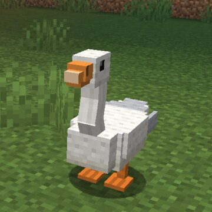
Auto-sexing: the ganders are white and the geese grey, so you can tell them at a glance.